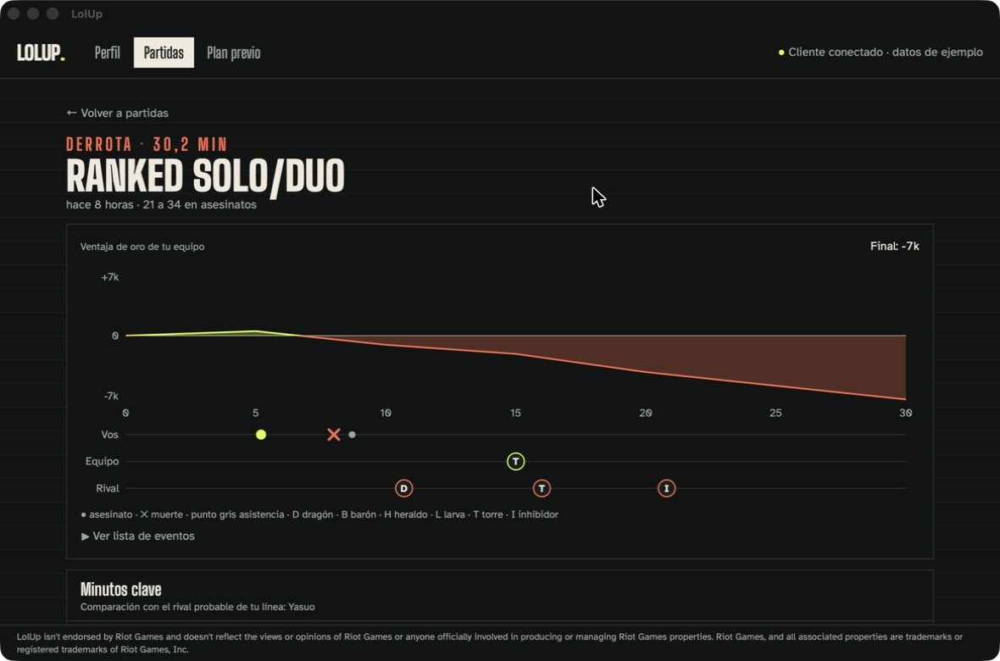
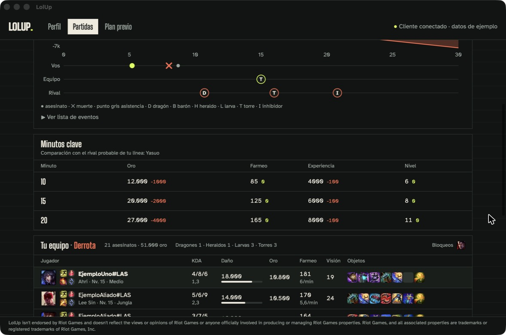
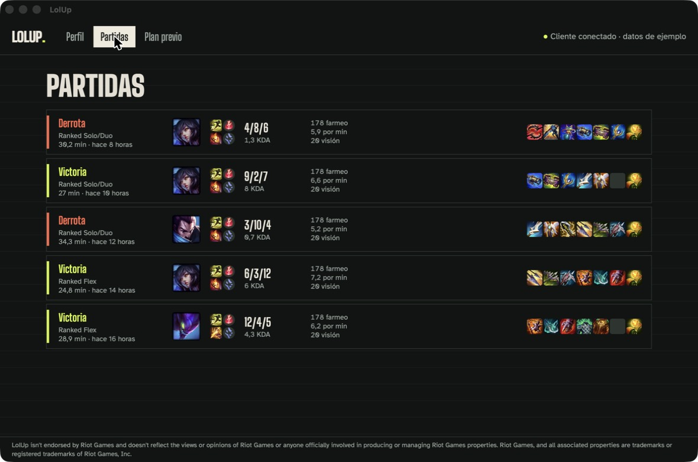
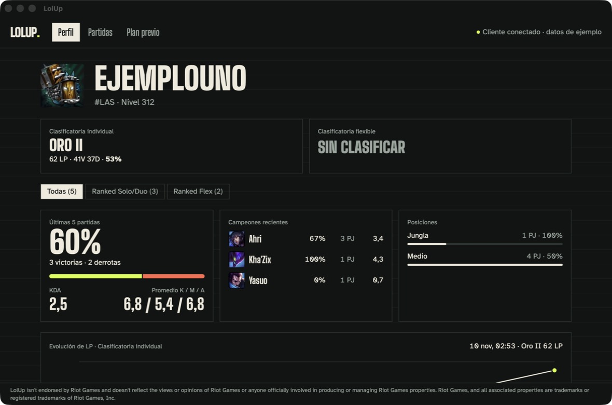

Pre-release · Windows · Not available to download yet
Your last game, explained.
LolUp is a desktop companion that helps League of Legends players understand their own matches and track their improvement between games.

After every game
See where it turned
Follow your team's gold lead over time, with your kills, deaths and every major objective on one timeline. Then compare gold, farm and experience with your likely lane opponent at minutes 10, 15 and 20.

Your history
Every match at a glance
Result, queue, champion, spells, runes, KDA, farm, vision and items for your recent games, with a full ten-player scoreboard one click away.

Your progress
Know what is working
Rank, recent win rate, champion and position performance, mastery, and an LP history that is saved on your own computer.

Fair play
What LolUp will not do
- Touch the game No memory reading, injection or graphics hooks.
- Play for you No auto-accept, auto-pick, auto-ban or scripted input.
- Reveal hidden players No champion select scouting.
- Track enemy cooldowns No enemy ultimate or spell timers.
- Invent a rank No MMR estimates or player skill scores.
- Read your live game LolUp does not read match data while you play.